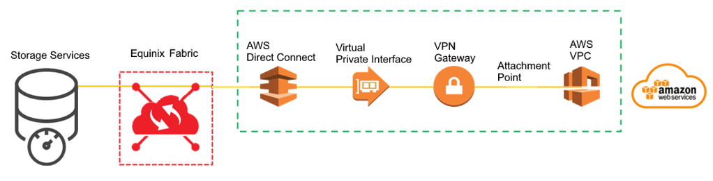
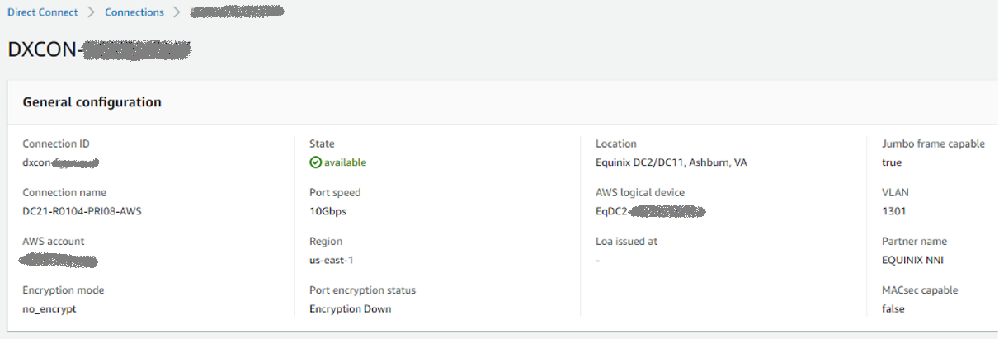

[Equinix] 从 Equinix 数据中心到云
为什么需要连接公有云
现代企业级应用，业务上往往需要贴近用户，功能上往往需要利用已有生态来扩展自身的服务，所以部署形态倾向于多元，越来越不受限于单一的数据中心。此外，公有云固然有弹性灵活，即付即用，服务标准化，同时无需重资产注入，运维成本也低的优势，但处于安全性和合规性考虑，很多企业依然需要将核心数据留在 on-prem 数据中心或者 co-location 数据中心。上述种种原因，使得混合基础设施成为相当数量的企业在目前阶段比较适合的选择。
我们的方案验证，同样也涉及到混合的基础设施，前面几篇文章讨论了数据与计算资源在 Equinix IBX 和 Equinix Metal 数据中心的结合，实际上 IBX 中的数据，不仅可以被 Equinix Metal 数据中心使用，同时得益于 Equinix 的互联能力，可以把 IBX 数据中心与各种公有云高速对接，从而把我们在 IBX 中的企业级存储设备作为数据底座。各个云上的各种服务，比如 AWS 上的 analytic 利用该数据作定制化的分析，比如 Azue 上的 SQL Server 利用同一份数据生成外链表格，与云上 native 的数据一起参与查询检索，等等。
如何连接公有云
建立与公有云高带宽、低延时连接，需要一定的网络条件，一般的区域枢纽节点都可以达到。托管我们存储设备的 IBX 其所在的 Ashburn Campus 即为美东枢纽节点，Equinix 为整个 Metro 配备了通过 Equinix Fabric 对接 AWS 和 Azure 的能力。接下来以 AWS 为例，简单归纳一下 Equinix 通过 AWS Direct Connect 连接云的过程。
Overview
AWS 与 co-location 数据中心连接的主要方式有两种，分别是 Site-to-Site VPN 以及 AWS Direct Connect (DX). 一般来说，DX 作为专线连接，可以提供更好的安全性，隔离性和连接质量。由于 Equinix 是 AWS 的合作商，DX 也属于托管连接，整个路径上的组件如下图：
AWS 上的环境准备
AWS 上需要为云上的计算资源准备一个环境：VPC，Subnet，以及相应的 route table，之所以提到 route table，因为后面会有一些路由方面的验证。另外，由于 Equinix 托管了 DX，还需要把 AWS 的 Account ID，环境所在 region，是否需要冗余，以及要求的带宽等信息提供给 Equinix.
Equinix Fabric 发起 DX 连接
Equinix Fabric 是 DX 的实际发起者，除了根据上面提供的信息创建连接之外，还需要让 IBX 的存储设备可以通过该 DX 与 AWS 通信。具体来讲，需要在存储设备的上级交换机上配置动态路由，将 IBX 中存储设备所在的子网宣告到对端。
1 | router bgp 645xx |
AWS 端完成连接配置
当 DX 在 Equinix Fabric 中建立之后，AWS console 中可以看到处于 pending 状态的连接，只需要 accept 一下。
而 Co-location 端的配置信息，Equinix 也会发给到 AWS 账号，包含：
- 用于 BGP 的两端的 IP （如上一小节的配置，一端为 169.254.1.1，另一端为 169.254.1.2）
- ASN
- BGP Token (用于创建 VIF)
- Translated VLAN （传输 BGP 信息的 VLAN，如上图中的 1301）
上一小节提到的对端即为 Direct Connect 的 virtual interface (VIF)，它与 IBX 中的交换机互为 peer，也即是 BGP 的两端。在已经 accept 的 DX 中，根据 Equinix 提供的信息，创建这个 VIF.
AWS 环境与 DX 对接
这是非常常规的一步。
- 首先需要创建一个 virtual private gateway，这里需要使用 Equinix 提供的 ASN 作为 AWS 一端 ASN.
- 然后将 virtual private gateway attach 到 VPC 上作为 VPC 的出口。
- 一切正常的话，路由信息会被自动补全。或者在 route table 中检查到 equinix IBX 的路由项是否建立。
小结
至此，AWS 与 Equinix IBX 数据中心已经打通，结合前几篇文章的描述，我们在 Equinix Metal 数据中心的应用程序以及 AWS 上的应用程序，都可以访问 Equinix IBX 中的数据了。当然，实际部署中，我们在 AWS 上有不止一个 VPC，连接方面，为了高可用，我们建立了两条 DX，并为此引入了 Direct Connect Gateway，以后有机会在合适的主题中再详述。
再啰嗦几句
这里通过五篇文章，以实际案例体验了 Equinix 的几大主要业务，并通过 Equinix Metal 对虚拟化的支持，以及 Equinix Fabric 的连接能力，和 Equinix IBX 临近云的优势，一窥 Equinix 在基础设施方面的布局和野望。
随着数字化转型的深入，越来越多的企业 IT 需要应用程序更接近客户，抑或是让计算更接近数据，由此带来的跨越地理位置的部署，在边缘处理业务的需求，使得从单一的基础设施转向混合基础设施已经成为趋势。Equinix 走出了一条有别于公有云的路线，凭借布局在各地的大型数据中心基础设施，多年经营并不断丰富的低延迟网络及其生态，加上新晋的数字化的裸机服务，刚好解决了现代 IT 和现代应用程序对混合架构，边缘计算，近云数据存储的诸多需求，成为数字化转型的一个重要支持力量。